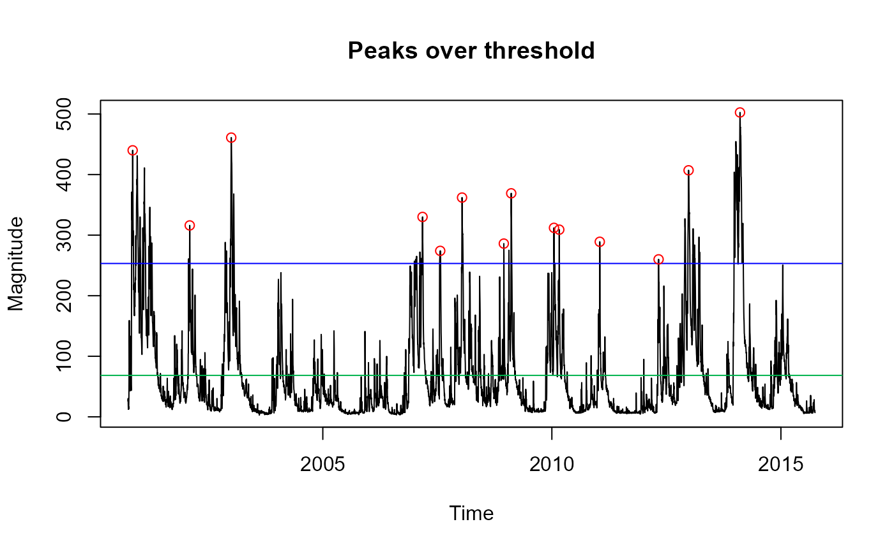
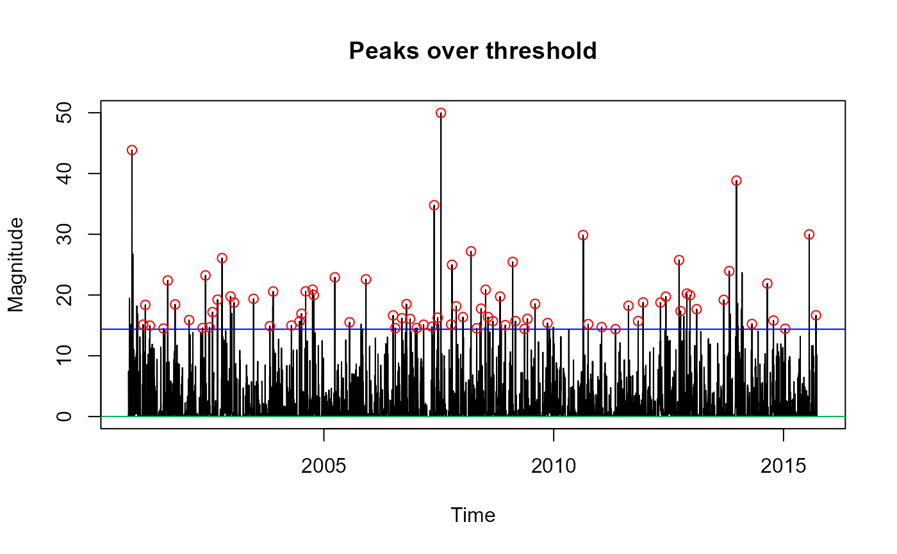

Peaks over threshold (POT) data extraction
POTextract.RdExtracts independent peaks over a threshold from a sample
Usage
POTextract(
x,
div = NULL,
TimeDiv = NULL,
thresh = 0.975,
Plot = TRUE,
ylab = "Magnitude",
xlab = "Time",
main = "Peaks over threshold"
)Arguments
- x
either a numeric vector or dataframe with date (or POSIXct) in the first column and hydrological variable in the second
- div
numeric percentile (between 0 and thresh), either side of which two peaks over the threshold are considered independent. Default is the mean of the sample.
- TimeDiv
Number of timesteps to define independence (supplements the div argument). As a default this is NULL and only 'div' defines independence. Currently this is only applicable for data.frames.
- thresh
user chosen threshold. Default is 0.975
- Plot
logical argument with a default of TRUE. When TRUE, the full hydrograph with the peaks over the threshold highlighted is plotted
- ylab
Label for the plot yaxis. Default is "Magnitude"
- xlab
Label (character) for the plot x axis. Default is "Time".
- main
Title for the plot. Default is "Peaks over threshold"
Value
Prints the number of peaks per year and returns a data.frame with columns; Date and peak, with the option of a plot. Or a numeric vector of peaks is returned if only a numeric vector of the hydrological variable is input.
Details
If the x argument is a numeric vector, the peaks will be extracted with no time information. x can instead be a data.frame with dates in the first column and the numeric vector in the second. In this latter case, the peaks will be time-stamped and a hydrograph, including POT, will be plotted by default. The method of extracting independent peaks assumes that there is a value either side of which events can be considered independent. For example, if two peaks above the chosen threshold are separated by the mean flow, they could be considered independent, but not if flow hasn't returned to the mean at any time between the peaks. Mean flow may not always be appropriate, in which case the 'div' argument can be applied (and is a percentile). The TimeDiv argument can also be applied to ensure the peaks are separated by a number of time-steps either side of the peaks. For extracting POT rainfall a div of zero could be used and TimeDiv can be used for further separation - which would be necessary for sub-daily time-series. Alternatively the POTt function can be applied (see associated details). When plotted, the blue line is the threshold, and the green line is the independence line (div).
Examples
# Extract POT data from Thames mean daily flow 2000-10-01 to 2015-09-30 with
# div = mean (default) and threshold = 0.95, and display the first six rows
thames_q_pot <- POTextract(ThamesPQ[, c(1, 3)], thresh = 0.95)

#> [1] "Peaks per year: 0.9336316"
head(thames_q_pot)
#> Date peak
#> 3 2000-11-07 440
#> 19 2002-02-05 316
#> 24 2003-01-02 461
#> 32 2007-03-07 330
#> 34 2007-07-26 274
#> 35 2008-01-16 362
# Extract Thames POT from only the numeric vector of flows and display the
# first six rows
thames_q_pot <- POTextract(ThamesPQ[, 3], thresh = 0.9)
head(thames_q_pot)
#> [1] 440 316 461 227 238 194
# Extract the Thames POT precipitation with a div of 0, the default
# threshold, and five timesteps (days) either side of the peak, and display the first six rows
thames_p_pot <- POTextract(ThamesPQ[, c(1, 2)], div = 0, TimeDiv = 5)

#> [1] "Peaks per year: 5.335037"
head(thames_p_pot)
#> Date peak
#> 1 2000-10-29 43.86
#> 2 2001-01-26 15.13
#> 3 2001-02-12 18.38
#> 4 2001-03-20 14.97
#> 5 2001-07-07 14.49
#> 6 2001-08-09 22.40